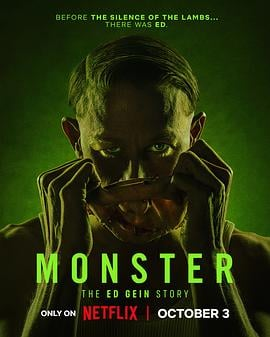

7.2
怪物：艾德·盖恩的故事
Monster: The Ed Gein Story
2025
美国
评分 7.2
导演:
麦克思·温克勒 / 伊安·布瑞南
演员:
查理·汉纳姆 / 劳丽·梅特卡夫 / 苏赞娜·桑 / 汤姆·霍兰德尔 / 奥莉维亚·威廉姆斯 / 薇姬·克里普斯 / 莱丝利·曼维尔
类型:
传记,剧情,恐怖,惊悚,犯罪
剧情简介
在冰冷的威斯康星冬夜，雪覆盖着田野，风声划破沉寂。艾德·盖恩（查理·汉纳姆 饰）独居在一座破旧农舍中，表面温顺、礼貌，镇上人都叫他“好脾气的盖恩先生”。然而，在这座陈旧的屋子里，藏着美国犯罪史上最令人战栗的秘密。《怪物：艾德·盖恩的故事》改编自真实事件，讲述20世纪50年代震惊全美的连环谋杀案。导演麦克思·温克勒与制片人瑞恩·墨菲以冷峻的视角还原“怪物”的诞生：盖恩在失去母亲后陷入精神崩溃，对死亡与女性的执念逐渐扭曲。他夜晚游走于墓地，挖掘尸体，剥取皮肤，拼凑出“重塑母亲”的幻象。这种骇人行径既是对孤独的逃避，也是对爱与掌控的病态表达。剧集采用双线叙事——一边是盖恩内心的崩坏，一边是警方的调查与社会反应。查理·汉纳姆抛弃以往硬汉形象，塑造出一个近乎悲剧的疯癫角色；劳丽·梅特卡夫饰演盖恩的母亲奥古斯塔，以极端的宗教狂热与情感操控奠定了这场心理灾难的根源。每一幕闪回、每一次幻听都如同罪恶与记忆交织的梦魇。导演通过静谧的镜头语言放大恐惧——农舍中吱呀作响的地板、挂满皮革的阴影墙、昏暗灯泡下的人影剪影，让观众在无血腥的画面中感受纯粹的寒意。音乐几乎全由低频声构成，像呼吸，又像地底的脉动。与其说这是犯罪剧，不如说是关于“怪物如何被制造”的心理挖掘。编剧布瑞南将社会冷漠、宗教压抑与男性孤独编织成盖恩的心灵牢笼。最终，当警方破门而入，盖恩静静坐在椅子上微笑，那笑容中没有悔意，只有一丝如孩童般的平静。《怪物：艾德·盖恩的故事》揭示了现代恐怖的起点：它不是关于血与尸，而是关于孤独、信仰与人性崩坏的代价。正如剧中那句令人毛骨悚然的旁白所说——“怪物不是天生的，而是被一点一滴造出来的。”